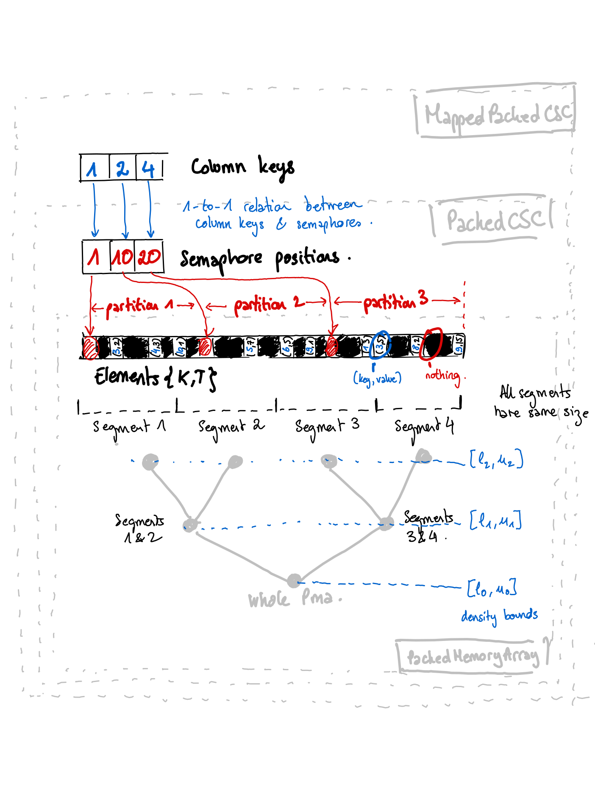

Dynamic Sparse Arrays
This package aims to provide dynamic sparse vectors and matrices in Julia. Unlike the sparse arrays provided in SparseArrays, arrays from this package have unfixed sizes. It means that we can add or delete rows and columns after the instantiation of the array.
DynamicSparseArrays is a registered package.
Introduction
Coluna is a branch-cut-and-price framework. It means that Coluna's algorithms dynamically generate constraints and variables. Therefore, the coefficient matrix (which is usually sparse) must support the addition of new rows and columns.
For this purpose, we implemented the packed-memory array data structure to handle the dynamic sparse vector introduced in the following papers:
BENDER, Michael A. et HU, Haodong. An adaptive packed-memory array. ACM Transactions on Database Systems (TODS), 2007, vol. 32, no 4, p. 26.
BENDER, Michael A., DEMAINE, Erik D., et FARACH-COLTON, Martin. Cache-oblivious B-trees. SIAM Journal on Computing, 2005, vol. 35, no 2, p. 341-358.
On top of the packed-memory array, we implemented the data structure introduced in the following paper to handle the dynamic sparse matrix.
WHEATMAN, Brian et XU, Helen. Packed Compressed Sparse Row: A Dynamic Graph Representation. In : 2018 IEEE High Performance extreme Computing Conference (HPEC). IEEE, 2018. p. 1-7.
The implementation may vary from the description in the papers. If you find some enhancements, please contact guimarqu.
Overview
The packed-memory array (PackedMemoryArray{K,T}) is a Vector{Union{Nothing,Tuple{K,T}}} where K is the type of the keys and T is the type of the values. We keep empty entries (i.e. Nothing) in the array to add new values later fast. Non-empty entries are sorted by ascending key order. The array is virtually split into segments of equal size. The goal is to maintain the density (i.e. number of non-empty values/size of the segment) of each segment between pre-defined bounds. We also consider the density of certain unions of segments represented by nodes of the tree in gray. The root node of the tree is the union of all segments, thus the whole array. When one node of the tree has a density outside the allowed bounds, we need to rebalance the parent. It means that we redistribute the empty and non-empty entries to fit the density bounds. If the density bounds are not respected at the root node, we resize the array.
On top of the packed-memory array, there is the (PackedCSC{K,T}). This is a particular case of a matrix where values are of type T, row keys of type K, and column keys of type Int. Each column of the matrix (partition) is delimited by a semaphore which is a non-empty entry with a reserved key value defined by the semaphore_key function. In the example, the first partition has its semaphore at position 1, starts at position 2, and finishes at position 9. At position 10, it's the semaphore that signals the beginning of the second partition. In each partition, non-empty entries are sorted by ascending key order.
As you can see, the PackedCSC{K,T} is not well suited to the matrix. Indeed, each column is associated with a partition. If you have a column with only zero values, the array will contain a partition with only empty entries. Lastly, the type of column key is Int. Therefore, built on top of PackedCSC{K,T}, MappedCSC{K,L,T} corrects all these shortcomings. This data structure just associates a column key of type L to each partition of PackedCSC{K,T}.

Architecture overview.
References
Missing docstring for dynamicsparsevec. Check Documenter's build log for details.
Missing docstring for dynamicsparse. Check Documenter's build log for details.